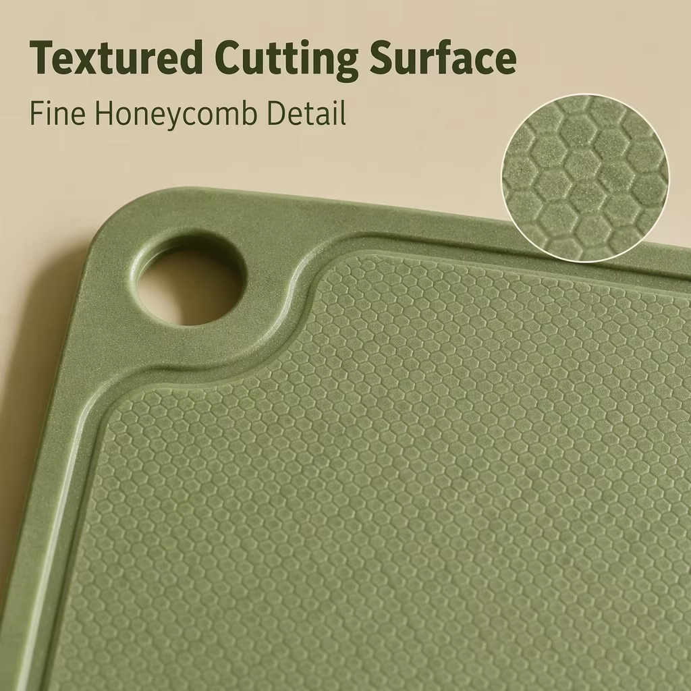
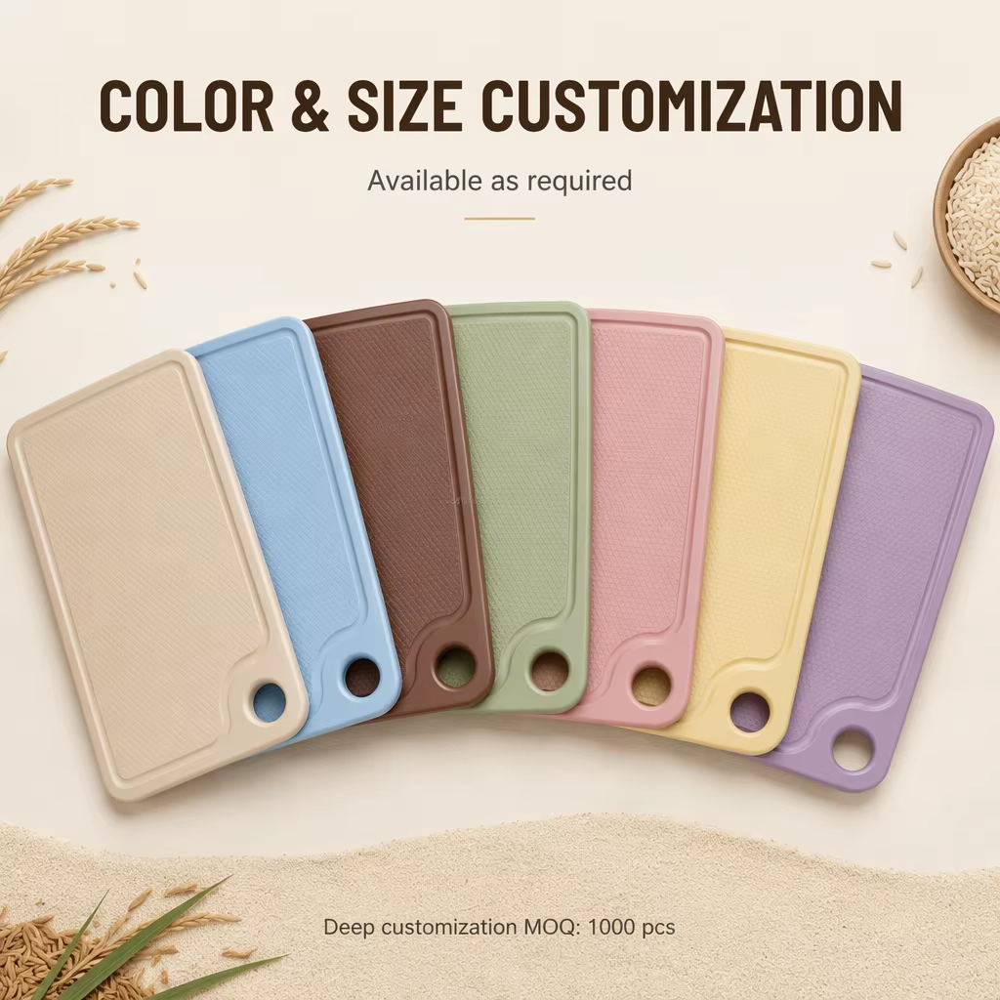

| Factor | Rice Husk | Bamboo | Wood | Plastic |
|---|---|---|---|---|
| Source | Rice husk, an agricultural by-product, plus a food-grade starch binder | Fast-growing grass | Hardwood or softwood timber | Virgin or recycled petro-based polymer |
| Food-contact testing | SGS-tested; LFGB and REACH statements available | Varies by supplier and finish | Varies by supplier and finish | Varies; check for BPA and phthalates |
| Knife surface | Dense, fine-grained; resists deep marks without dulling blades quickly | Firm; can be harsh on edges | Gentle on edges; deep scoring over time | Soft; grooves form quickly and can harbour residue |
| Water & odour | Non-porous, odourless, does not soak up juices | Absorbs some moisture if seams open | Porous; can hold odours and moisture | Non-porous but scratch grooves trap residue |
| Cleaning | Hand washing, or a standard dishwasher cycle | Hand wash recommended by most makers | Hand wash recommended | Usually dishwasher safe |
| Colour options | Any Pantone shade, matched and repeatable | Natural tone; stains with use | Natural tone only | Wide colour range |
| End of life | Plant-based; reuses farm residue | Plant-based | Plant-based | Fossil-derived; recycling varies |
| Best for | Own-label and colour-coded ranges, retail and foodservice | Eco-positioned natural boards | Premium natural / butcher blocks | Low-cost, high-heavy-duty use |
How to read this table
The right board depends on the channel you sell into and the claim you want to make on the box.
1. Hygiene is about the surface, not just the material
A board can be made from a "natural" material and still be porous enough to hold moisture and smells. Rice husk boards are pressed into a dense, non-porous surface that does not soak up juices the way an end-grain wooden board can, and they are odourless in use. Plastic starts non-porous too, but once deep knife grooves form they are hard to clean fully. That is why surface hardness and cleanability matter more than the headline material.


2. Knife feel and wear affect repeat orders
For a retail brand, the customer's first impression is how the board feels to cut on. Bamboo is firm and can be tough on knife edges. Wood feels good but scores deeply. Plastic is gentle but grooves quickly. Rice husk sits in a useful middle ground: firm and fine-grained, resistant to deep marking, and not unusually harsh on edges. Fewer deep marks also mean the board still looks good after months of use — which reduces complaints and returns.
3. Colour is a commercial advantage
Colour-coded chopping boards are a common control in HACCP-based food-safety systems, separating raw meat, cooked food, vegetables and allergens. Wood and bamboo are limited to natural tones that stain with use. Plastic can be coloured, but it is a petro-based material. A rice husk board can be matched to any Pantone shade and repeated on reorder, so a brand can build a recognisable colour-coded set that stays consistent from one production run to the next.

Where rice husk fits — and where it does not
Rice husk is a strong choice if you are building an own-label or colour-coded range, want a plant-based material with food-contact test reports, and need a board that looks good over time. If your customer needs a heavy butcher's block, a traditional wooden board is still the right answer. If the brief is simply the cheapest board per unit, plastic wins on price. We would rather say that plainly than sell a board into the wrong channel.